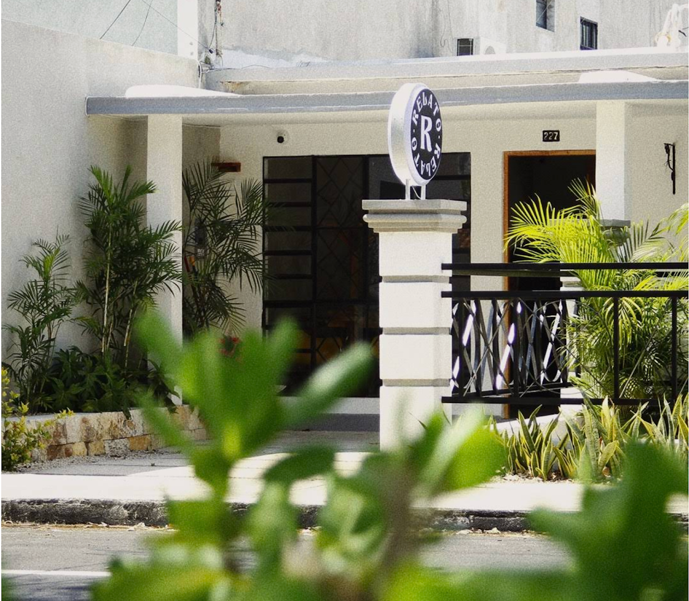

Guía especializada de Cafeterías de Mérida, Yucatán
Descubre las mejores cafeterías de la ciudad
Explorar cafeteríasTop Picks
Explora las cafeterías en el mapa
Sobre la guía
Esta guía reúne algunas cafeterías recomendadas de Mérida para descubrir nuevos espacios, disfrutar café de especialidad y conocer diferentes ambientes de la ciudad.
Recomienda una cafetería
¿Conoces alguna cafetería que debería aparecer en esta guía? Compárteme tu recomendación.